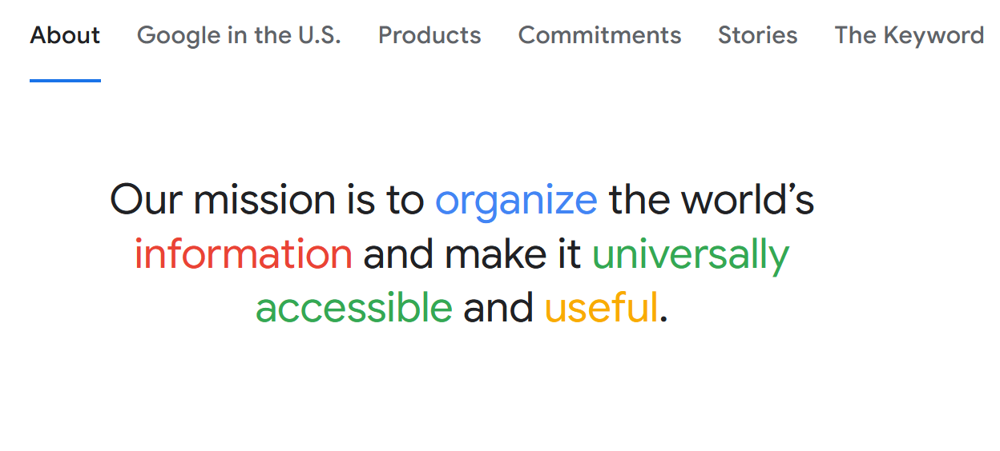

control over color
On average, black text against white backgrounds enables users to comprehend information more swiftly, with up to a 9% increase in
speed when using sans-serif fonts.

positive
mood
Light themes create a positive user experience and influences the user's mood positively, making them more likely to engage with the content. Afterall, light themes are likened to daylight.